覆盖是给剪辑留选择，不是多拍角度
每个场景至少三种材料：一条能独立讲清空间的保底主镜头、一条反打或过肩、两三个能插入的动作特写。剪辑时需要靠它们改节奏、藏穿帮、救表演。
开机前按“主镜头—反打—插入”列一张覆盖表，每项写拍到什么才算过；不要现场看到什么拍什么。
边界
镜头多不等于能剪。所有角度必须共享同一条动作线；演员在每条里做的动作不一致，素材越多越难救。
现场
一场戏拍四条：全景交代空间，中景交代关系，近景交代反应，手部插入交代信息。每条至少拍两条，按顺序在监视器上回放。
DIAGRAM / COVERAGE
覆盖：一个动作，四种景别

怎么做
覆盖不是同一条拍十遍，而是给剪辑留下不同信息：全景交代空间，中景交代关系，近景交代反应，插入交代细节。
- 先拍一条能看懂全场的全景，至少两条。
- 再补中景、近景和手部插入，每个景别至少两条。
- 最后拍反打和过渡镜头，按顺序回放，确认每个信息点都有替代。
别踩
别用同一种景别拍完整场；那不叫覆盖，叫重复。
图片说明：本页封面、图解与步骤图是编辑示意或结构图，不是本页实测照片，也不能当作器材测试证据；AI 辅助生成的图会在图注标出。判断器材或画面，以正文的测试条件与现场记录为准。